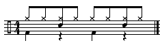
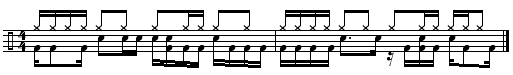
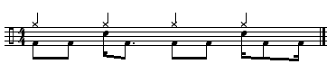
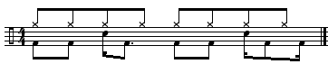
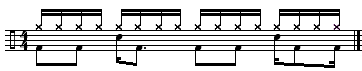
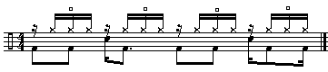

When we create a drum pattern there are two factors to take into consideration.
Let's take a look at some basic ideas about drum programming.
When orchestrating a rhythm part, we'll take a basic pattern and divide it between different drum instruments. This typically works out to be the kick, snare and hi-hat on a drum kit. These instruments are particularly effective since they each occupy a different space in the frequency spectrum. The kick drum occupies low frequencies, the snare covers the mid range, while the hi-hat and cymbals in general take up the upper mid range and high frequencies. A well orchestrated drum part distributes various parts of a rhythm pattern to different frequency registers.
Most drum patterns are based on a drum kit made up of a kick drum, a snare drum, and a hi-hat. These are the basic tools used in orchestrating a rhythm. Although there are many ways to think about programming drum parts, we can break down the roles of the different drums into two categories:
Traditionally the kick and the snare will define the basic beat of the pattern, while the hi-hat will define the pulse, or the rhythmic feel. Drum patterns often start with the kick drum playing on the strong beats 1 and 3 while the snare plays on weaker beats 2 and 4. In practice, however, there are few hard-and-fast rules, other than that most effective patterns will alternate attacks between the kick and snare drums.
|

|
||
|
A basic four-beat pattern
|  | ||
|
A complex pattern
The hi-hat will always define the rhythmic feel or groove of a pattern. This often is the difference between what we think of as a rock, funk, or a house pattern. The same kick snare pattern can take on very different characteristics depending on whether the hi-hat plays quarter notes, eighth notes, or sixteenth notes.
|  | ||
|
||
|
A
quarter-note hi-hat part
|
||
|  | ||
|
||
|
An
eighth-note hi-hat part
|
||
|  | ||
|
||
|
A
sixteenth-note hi-hat part
|
When we use sixteenth notes in the hi-hat, a repeating pattern -- instead of straight sixteenths -- can be used to break things up a bit. In addition, alternating between open and closed hi-hats can provide certain accents that will contribute to a establishing a rhythmic feel.
|  | ||
|
A broken hi-hat pattern
Although the drum kit is the typical model for defining rhythm patterns, we can always substitute other sounds to take on the roles of the kick, snare, and hi-hat. Remember the frequency ranges that each drum occupies and you'll be able to stretch the sonic boundaries in your rhythm programming.
|
Click
to play
|
Take a look at the chart below to review some of the ideas about rhythm programming we've just looked at:
| Instrument | Frequency Range | Function |
|---|---|---|
| Kick |
Low |
Defines
the rhythm |
| Snare |
Midrange |
|
| Hi-hat
or ride cymbal |
Upper
mid range to high |
Defines
the feel |
As we saw in some of the previous examples, the hi-hat can be used to help define the rhythmic feel of a pattern. In addition there are three performance characteristics that allow us to add interest and more of a human feel to our music. Each of these is achieved in a typical drum machine or sequencer by adjusting certain corresponding parameters.
| Performance Characteristic | Drum Machine Parameter |
|---|---|
| Patterns
of loud and soft attacks |
Accent |
| Deviation
from the standard grid |
Shuffle |
| Rhythmic
ornaments |
Flams |
In your first assignment this semester you'll use Redrum to create some basic rhythm patterns and assemble them into a final song form that we can use in a sequenced arrangement.